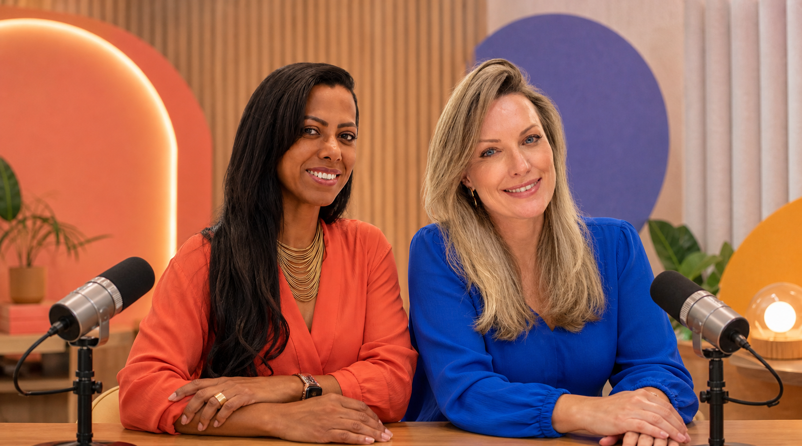
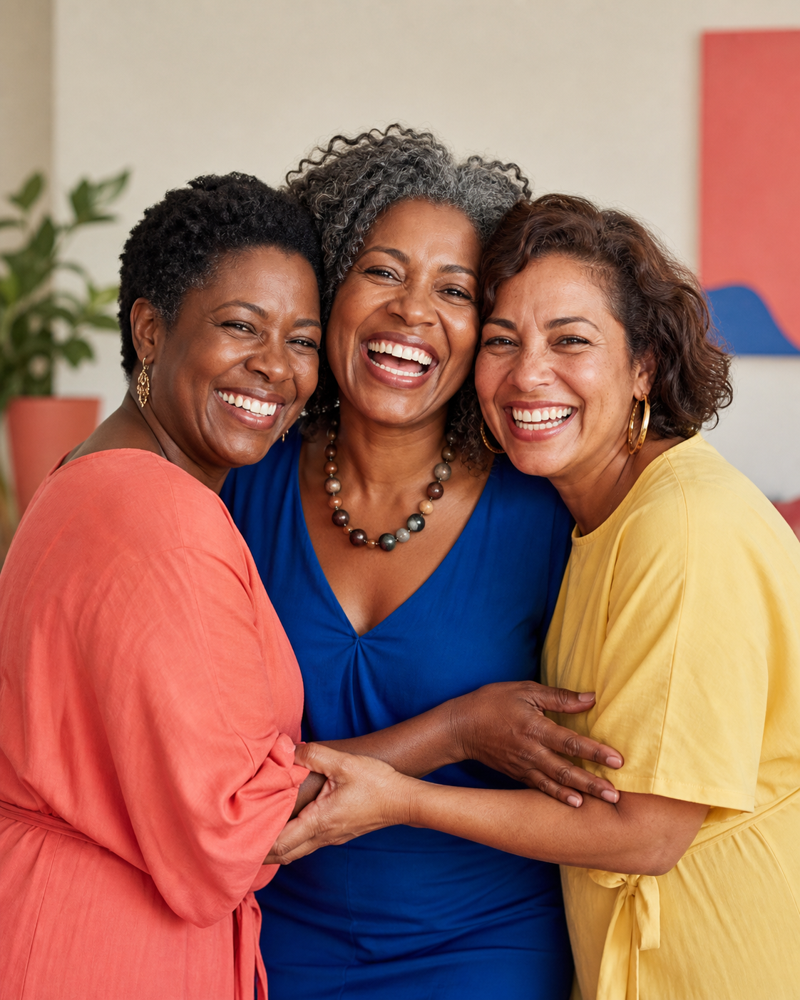
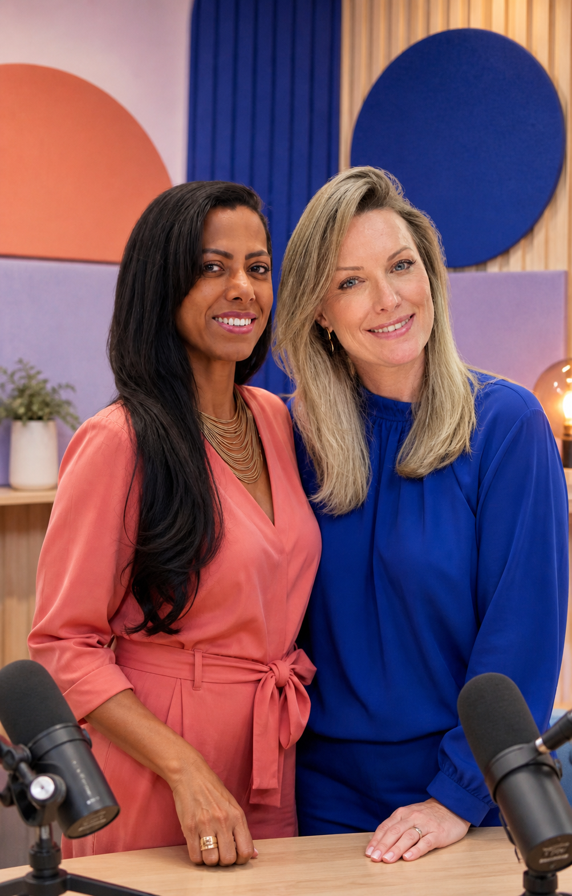
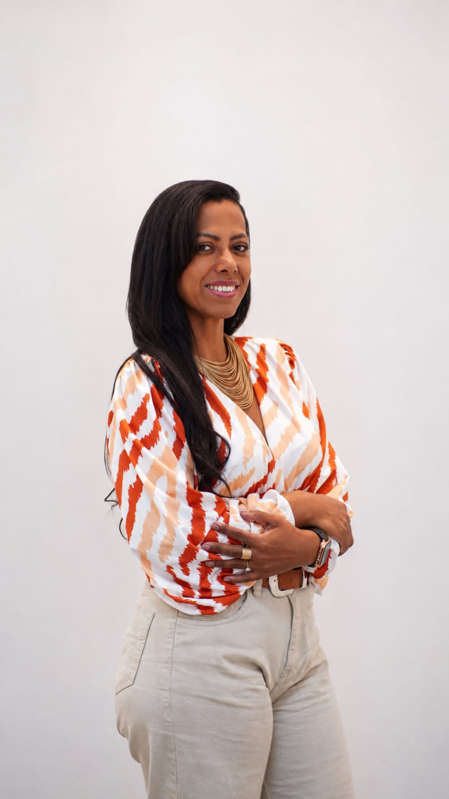
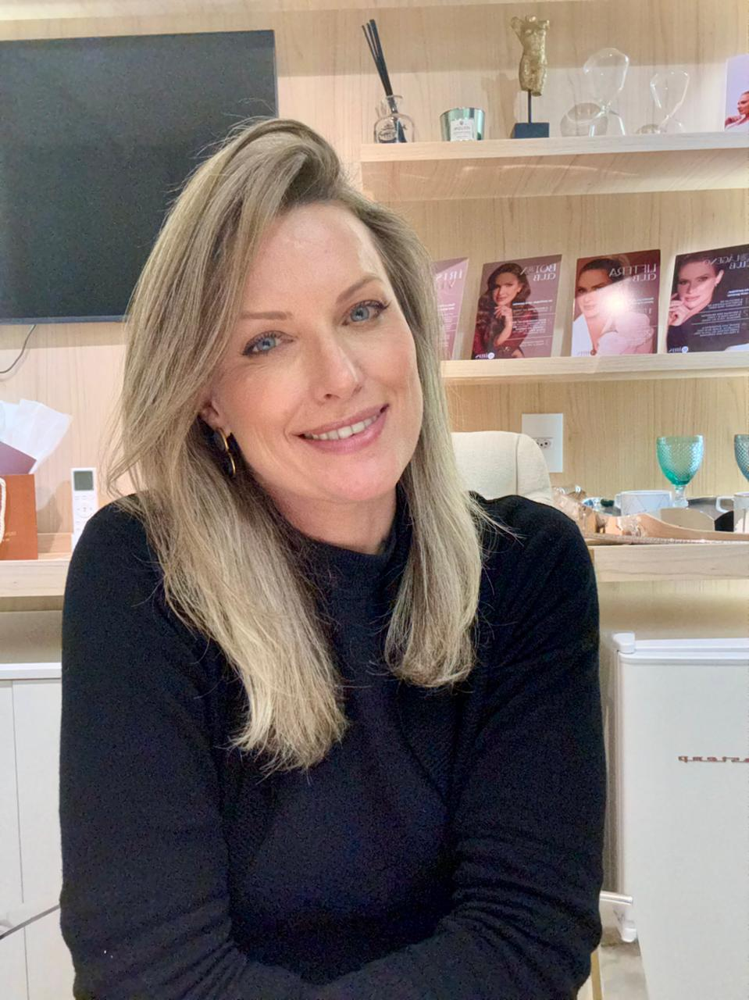

Especialistas por perto
Entrevistas, debates e conversas responsáveis com profissionais da saúde.

UM PODCAST PARA TODAS NÓS
PODCAST • AUDIOVISUAL • PARTICIPAÇÃOCONVERSAS REAIS. INFORMAÇÃO SEM TABU.
Informação confiável e muito acolhimento para viver essa fase com liberdade.
▶ OUÇA OS EPISÓDIOSPOR QUE ESTE PODCAST?

A menopausa não tem uma única idade, aparência ou experiência. Por isso, reunimos profissionais, histórias de vida, perguntas sinceras e informação acessível.
Um espaço de conversa para mulheres, famílias, redes de apoio e pessoas que cuidam da saúde feminina.
Explore todos os episódios →
PROJETO EM MOVIMENTOO QUE MOVE O MENOPAUSA NÃO TEM COR
Uma plataforma de comunicação sobre climatério e menopausa, feita para aproximar conhecimento, experiências e participação social.
Entrevistas, debates e conversas responsáveis com profissionais da saúde.
Mulheres de diferentes regiões, idades, realidades e contextos no centro da pauta.
Perguntas, sugestões e relatos ajudam a construir cada nova conversa.
INFORMAÇÃO MUDA TUDO
Menopausa é uma fase natural da vida, não uma doença. Cada mulher pode vivê-la de um jeito diferente.
Faixa em que a menopausa geralmente ocorre, segundo o Ministério da Saúde.
Sem menstruação confirmam a menopausa; o climatério é toda a fase de transição.
Intensidade, duração e combinação de sintomas variam muito. Cuidado deve ser individualizado.
Fontes: Ministério da Saúde e NIH. Conteúdo educativo; não substitui consulta médica.
VAMOS FALAR SOBRE
O que são os fogachos, por que acontecem e como conversar sobre eles sem constrangimento.
NO PODCAST →Noites interrompidas, cansaço e caminhos para cuidar da rotina com mais gentileza.
NO PODCAST →Libido, conforto, autoestima e relações — informação clara, sem tabu e sem julgamento.
NO PODCAST →Humor, memória e concentração também fazem parte dessa conversa inteira.
NO PODCAST →QUEM PUXA ESSA CONVERSA
Encontros com curiosidade, leveza e coragem para fazer as perguntas que tantas mulheres guardam.

Presidente do Núcleo Negro Avante Afro

NA TEMPORADA INAUGURAL
Conversas conduzidas com responsabilidade, diversidade e escuta ativa.
DÊ O PLAY
Ouça no site, favorite seus episódios e volte quando quiser.